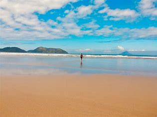

MAIS INFORMAÇÕES SOBRE A PRAIA:
Localização: São Sebastião, no litoral norte do estado de São Paulo, Brasil. A entrada principal fica na altura do km 176 da Rodovia Rio-Santos (BR-101), através de uma estrada secundária que passa por um condomínio com acesso livre.
Descrição Detalhada da Praia de Juquehy
A Praia de Juquehy é uma das mais famosas e belas praias de São Sebastião, conhecida por suas excelentes condições para a prática de esportes aquáticos e pela preservação ambiental.
Características Principais:
- Extensão e Areia: A praia possui uma faixa de areia branca e fofa, com aproximadamente 3 km de extensão.
- Águas: O mar é calmo no lado esquerdo, ideal para famílias e crianças, e mais agitado no lado direito, atraindo surfistas e praticantes de outros esportes aquáticos.
- Vegetação: Cercada pela Mata Atlântica, a praia oferece sombra natural e um ambiente fresco e agradável. A vegetação nativa contribui para a sensação de estar em um local selvagem e preservado.
- Infraestrutura: A Praia de Juquehy conta com diversas opções de hospedagem, como pousadas e hotéis, além de restaurantes e quiosques que oferecem bebidas e lanches.
Atividades:
- Esportes Aquáticos: Juquehy é um ótimo ponto para a prática de esportes aquáticos, como surf, stand-up paddle e caiaque.
- Caminhadas e Exploração: A praia oferece trilhas e grandes pedras nas extremidades, ideais para quem gosta de explorar e apreciar a vista.
- Relaxamento: Com sua beleza natural e tranquilidade, Juquehy é perfeita para quem busca relaxar e se desconectar do agito urbano.